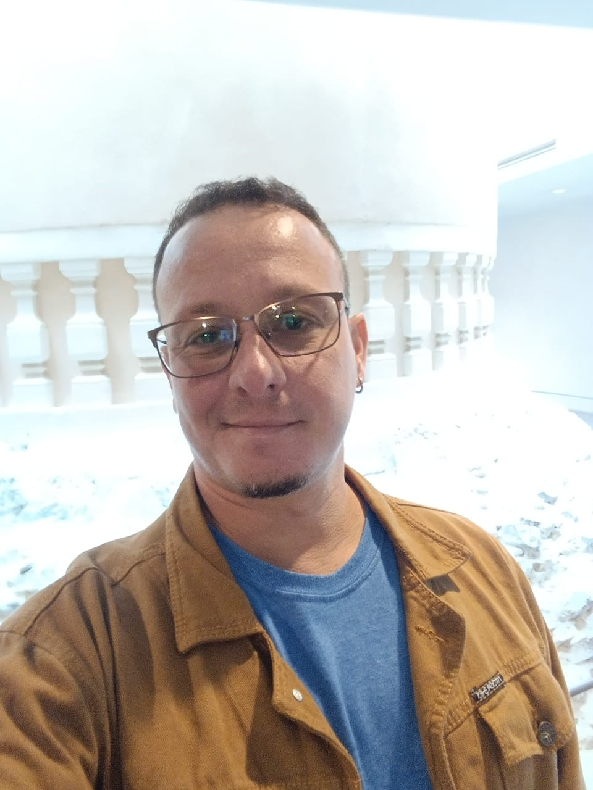

about me
I am a Professor at Universidade Federal Fluminense (IC/UFF) and researcher at FRAME Lab. I have been a visiting scholar at DeducTeam/INRIA. I have been working mainly with logics for concurrent systems but I also have been working into the development of extensible theorem provers, normalisation for natural deduction systems, ontologies, formalisation of multi-agent systems and proof theory for logic systems. I was on the directive committee of the Brazilian Logic Society (SBL, 2017-2019, 2019-2021, and 2023-2025), former coordinator of the Logic Interest Group of the Brazilian Computer Society (SBC, 2020-2024).
Research interests
- Automated reasoning
- Dynamic logic
- Formal methods
- Logic
- Modal logic
- Proof theory
Contact
Instituto de ComputaçãoUniversidade Federal Fluminense
Niterói-RJ, Brazil
bruno@ic.uff.br
projects
CNPq. This project investigates Process Algebra, Distributed Systems, Computational Complexity, and Computer Security from the perspective of Modal and Dynamic Logics. By exploiting the common transition-system semantics underlying these areas, it develops logical foundations and automated reasoning techniques for the formal specification, verification, and analysis of intelligent and distributed systems.
CAPES STIC/AmSud. International STIC AmSud collaboration between South America and France aimed at advancing the theory and applications of Dynamic Logics. The project promotes collaborative research on logical methods for formal reasoning, verification, and specification of computational systems.
FAPERJ. This project developed a framework for the modeling, verification, and certification of critical systems by combining Dynamic Logics with Reo and Petri Nets. The research focused on automated verification, certified code generation, theorem proving, and model checking for concurrent and distributed systems.
Prefeitura Municipal de Niterói. This project proposed a cloud-based interoperability framework for heterogeneous municipal information systems. It employed knowledge representation, ontologies, and semantic technologies to enable dynamic integration of data sources and improve public administration through interoperable information services.
UFF-FOPESQ. The project investigated logical foundations for reasoning about concurrent systems using Dynamic Logic, automated theorem provers, and proof assistants. It resulted in theoretical and software frameworks supporting the formal verification of concurrent computational models.
FAPERJ. This multidisciplinary project developed computational methods for managing large-scale scientific workflows in bioinformatics, supporting drug discovery for neglected tropical diseases. The research addressed workflow management, high-performance computing, provenance, and data analysis for scientific experiments.
FAPERJ. This project developed logical and Petri Net-based methods for the formal verification of multi-agent systems. The proposed framework supports specification, automated reasoning, and verification of properties such as liveness, communication, and deadlock freedom.
CNPq. This research investigated the interplay between Category Theory and Proof Theory as foundations for formal semantics, knowledge representation, and logical systems. The project explored categorical semantics, compositional reasoning, ontology refinement, and automated proof construction.
CNPq. This project investigated the use of Dynamic Logic and Stochastic Petri Nets for the formal verification of software models. It proposed techniques to automatically translate UML specifications into formal models amenable to automated verification and certification.
FAPERJ. The project developed logical methods for software certification by combining extensions of Propositional Dynamic Logic with Petri Nets. Its objective was to provide formal guarantees of software correctness through automated reasoning and verification techniques.
CAPES STIC AmSud. This project strengthens a long-standing collaboration between Brazilian, Argentine, and French research groups, particularly with INRIA's Deducteam, to advance research in logic and formal methods. Its main objectives include the development of automated theorem proving techniques for modal logics, formal verification methods for model-driven engineering, and logic-based approaches to information extraction, interoperability, and counterfactual reasoning. The collaboration also promotes researcher and student exchanges, joint supervision, workshops, and the development of shared theoretical and software tools.
alumni
Current Students
D.Sc. students
- Maurício da Silva Pires (CAPES)
- Renato Reis Leme (FAPESP)
M.Sc. students
- Thiago Prado de Azevedo Andrade
Undergrad research students
- Rafael Accetta Vieira (UFF)
Former Students
D.Sc. students
- Luiz Gustavo Dias ("MAESTRO: Uma Abordagem para Gerência de Experimentos Científicos Apoiada por Ontologias e Dados de Proveniência", CAPES), 2024
M.Sc. students
- Camila de Souza Ferreira ("Modelagem do consenso bizantino síncrono em Timed Automata", FAPERJ), 2025
- Caio Serra de Mello ("Formal Modeling and Verification of the XMPP Protocol Using UPPAAL"), 2025
- Matheus Guimarães Robaína ("A Tableaux method for Memory Propositional Dynamic Logic with Iteration", CNPq), 2024
- Allan Patrick de Freitas Santana ("Interoperabilidade Semântica de Dados", Prefeitura Municipal de Niterói), 2023
- Daniel Arena Toledo ("Formalização de conectores Reo híbridos com aplicações a Consenso Bizantino"), 2021
- Erick Simas Grilo ("ReLo: a dynamic logic to reason about Reo circuits", CNPq), 2021
- Maurício da Silva Pires ("Revisitando o Teorema de Courcelle", CNPq), 2020
- Bruno Olímpio Costa ("Verificação formal de modelos de Blockchain"), 2019
Undergrad research students
- Vinícius Moraes Gonçalves ("Um ambiente para raciocínio sobre conectores Reo", CNPq), 2025
- Vinícius Moraes Gonçalves ("Uma interface para raciocínio sobre conectores Reo", CNPq), 2024
- Maximilian Harrison Júnior ("Raciocínio sobre Lógica de Descrição no Coq", Fundação Euclides da Cunha), 2023
- Vinícius Moraes Gonçalves ("Uma interface para raciocínio sobre conectores Reo", FAPERJ), 2022
- Thiago Prado de Azevedo Andrade ("Sistemas cíber-físicos e Reo: modelagem e verificação automática", CNPq), 2021
- Thiago Prado de Azevedo Andrade ("Modelagem Lógica de Sistemas Críticos para Smart Cities", CNPq), 2021
- Mariana de Freitas Ferreira ("Integração de ferramentas para raciocínio sobre conectores Reo", FAPERJ), 2021
- Amélia de Almeida Guerreiro ("Extração de explicação para classificadores baseados em árvores de decisão através de Tree Automata", FAPERJ), 2021
- Felipe Vieira Freire da Silva ("Um compilador de linguagem de alto nível para conectores Reo parametrizados", CNPq), 2019
- Erick Simas Grilo ("Uma interface para a verificação formal de propriedades em sistemas através do Coq", FAPERJ), 2019
- Daniel Arena Toledo ("Verificação de modelos Reo com nuXmv", CNPq), 2019
- Allan Patrick de Freitas Santana ("Verificação formal de modelos de Smart Contracts"), 2019
- André Luiz Pereira de Oliveira Junior ("Verificação em lógica de modelos Reo", CNPq), 2018
- Matheus Enes Santos Viana ("Resolução e prova automática de teoremas: uma abordagem extensível", CNPq), 2016
Undergrad final work
- Vinícius Toledo do Prado Paes ("Revisando classes de complexidade computacional"), 2025
- Thiago Prado de Azevedo Andrade ("Estudo e prova de Completude para o método de Tableaux em Reo"), 2025
- Jéssica Cavalcante Christiano Lameri ("Desenvolvimento de uma biblioteca heap em Clojure utilizando monads"), 2023
- Mariana de Freitas Ferreira ("Integração de ferramentas para raciocínio sobre conectores Reo"), 2022
- Igor Figueiredo Cruz ("Provador de Teoremas para GeoBGL"), 2022
- Mateus Azeredo Torres ("Modelagem automática de Timed Data Streams no nuXmv"), 2021
- Flávia Elias Rocha e Luan Simões Cardoso ("EDOπ: Uma biblioteca em Python para música microtonal"), 2021
- Amanda Tamires Inacio Silva ("OntoScraping: Enriquecimento de Ontologias por meio de Web Scraping"), 2021
- André Luiz Pereira de Oliveira Junior ("Verificação de modelos DS3 com Storm Model Checker"), 2020
- Allan Patrick de Freitas Santana ("Verificação automática de programas utilizando Lógica Dinâmica com aplicações a smart contracts"), 2020
- Daniel Arena Toledo ("Um compilador de circuitos Reo para modelos nuXmv"), 2019
- Thiago Cordeiro de Castro ("PDL como uma linguagem de consulta para Constraint Automata"), 2018
- Leonardo Almeida dos Santos Pereira ("Avaliação da comunicabilidade dos conceitos de HDI para adolescentes"), 2018
- Erick Simas Grilo ("Compiling certified Reo code"), 2018
- Matheus Enes Santos Viana ("Um provador automático de teoremas extensível a partir da Lógica Clássica Proposicional"), 2016